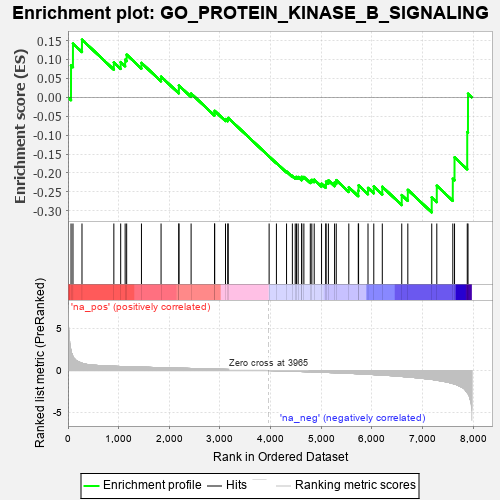
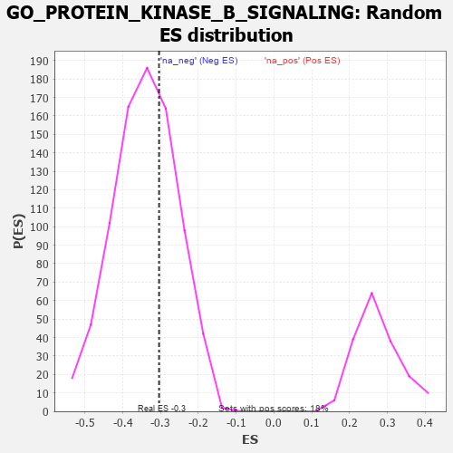

| | | Dataset | 7d |
| Phenotype | NoPhenotypeAvailable |
| Upregulated in class | na_neg |
| GeneSet | GO_PROTEIN_KINASE_B_SIGNALING |
| Enrichment Score (ES) | -0.30402172 |
| Normalized Enrichment Score (NES) | -0.8920198 |
| Nominal p-value | 0.6468447 |
| FDR q-value | 0.9564808 |
| FWER p-Value | 1.0 |
Table: GSEA Results Summary

Fig 1: Enrichment plot: GO_PROTEIN_KINASE_B_SIGNALING
Profile of the Running ES Score & Positions of GeneSet Members on the Rank Ordered List
| PROBE | GENE SYMBOL | GENE_TITLE | RANK IN GENE LIST | RANK METRIC SCORE | RUNNING ES | CORE ENRICHMENT | | 1 | RAC2 | | | 60 | 2.442 | 0.0842 | No |
| 2 | IRS1 | | | 98 | 1.659 | 0.1419 | No |
| 3 | HGF | | | 276 | 0.870 | 0.1522 | No |
| 4 | STOX1 | | | 905 | 0.506 | 0.0920 | No |
| 5 | AKT1 | | | 1040 | 0.476 | 0.0929 | No |
| 6 | SRC | | | 1128 | 0.459 | 0.0992 | No |
| 7 | GAB1 | | | 1158 | 0.453 | 0.1125 | No |
| 8 | OTUD3 | | | 1450 | 0.400 | 0.0908 | No |
| 9 | GATA4 | | | 1837 | 0.330 | 0.0545 | No |
| 10 | MEIS3 | | | 2188 | 0.278 | 0.0208 | No |
| 11 | C1QBP | | | 2189 | 0.278 | 0.0312 | No |
| 12 | MET | | | 2430 | 0.240 | 0.0100 | No |
| 13 | MTM1 | | | 2893 | 0.168 | -0.0421 | No |
| 14 | FGFR2 | | | 2895 | 0.167 | -0.0359 | No |
| 15 | GPX1 | | | 3109 | 0.135 | -0.0577 | No |
| 16 | SFRP5 | | | 3154 | 0.129 | -0.0584 | No |
| 17 | GCNT2 | | | 3162 | 0.128 | -0.0545 | No |
| 18 | IGF1R | | | 3970 | -0.002 | -0.1563 | No |
| 19 | MTOR | | | 4114 | -0.025 | -0.1734 | No |
| 20 | BAG4 | | | 4314 | -0.061 | -0.1962 | No |
| 21 | MYDGF | | | 4429 | -0.081 | -0.2075 | No |
| 22 | HIP1 | | | 4485 | -0.092 | -0.2110 | No |
| 23 | ILK | | | 4510 | -0.096 | -0.2104 | No |
| 24 | NTRK2 | | | 4543 | -0.104 | -0.2106 | No |
| 25 | ADTRP | | | 4612 | -0.120 | -0.2146 | No |
| 26 | GATA3 | | | 4614 | -0.120 | -0.2102 | No |
| 27 | FGFR3 | | | 4656 | -0.129 | -0.2106 | No |
| 28 | RTN4 | | | 4783 | -0.154 | -0.2207 | No |
| 29 | P2RX4 | | | 4813 | -0.161 | -0.2183 | No |
| 30 | DLG1 | | | 4860 | -0.169 | -0.2177 | No |
| 31 | KLF4 | | | 5005 | -0.198 | -0.2285 | No |
| 32 | DRD2 | | | 5088 | -0.221 | -0.2305 | No |
| 33 | ITSN1 | | | 5094 | -0.222 | -0.2228 | No |
| 34 | FLCN | | | 5140 | -0.235 | -0.2196 | No |
| 35 | PTEN | | | 5262 | -0.261 | -0.2251 | No |
| 36 | MAGI2 | | | 5295 | -0.269 | -0.2190 | No |
| 37 | FGFR1 | | | 5543 | -0.332 | -0.2377 | No |
| 38 | CALCR | | | 5730 | -0.386 | -0.2467 | No |
| 39 | TPTE2 | | | 5736 | -0.388 | -0.2327 | No |
| 40 | STK11 | | | 5922 | -0.443 | -0.2395 | No |
| 41 | RAC1 | | | 6036 | -0.484 | -0.2355 | No |
| 42 | INSR | | | 6204 | -0.538 | -0.2364 | No |
| 43 | RNF41 | | | 6588 | -0.703 | -0.2583 | No |
| 44 | EGFR | | | 6708 | -0.765 | -0.2446 | No |
| 45 | PTPRJ | | | 7180 | -1.054 | -0.2644 | Yes |
| 46 | CIB1 | | | 7280 | -1.152 | -0.2336 | Yes |
| 47 | GRM2 | | | 7596 | -1.547 | -0.2152 | Yes |
| 48 | PDCD6 | | | 7630 | -1.615 | -0.1587 | Yes |
| 49 | FYN | | | 7881 | -2.622 | -0.0917 | Yes |
| 50 | CAV3 | | | 7896 | -2.739 | 0.0095 | Yes |
Table: GSEA details [plain text format]

Fig 2: GO_PROTEIN_KINASE_B_SIGNALING: Random ES distribution
Gene set null distribution of ES for GO_PROTEIN_KINASE_B_SIGNALING